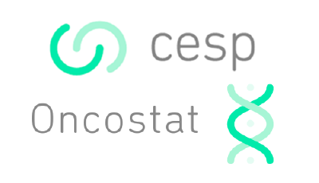

library(tidyverse)
library(crosstable)
head(mtcars2, 4)
#> # A tibble: 4 × 14
#> model mpg cyl disp hp drat wt qsec vs am gear carb hp_date qsec_posix
#> <labe> <lab> <fct> <lab> <lab> <lab> <lab> <lab> <lab> <lab> <fct> <lab> <date> <dttm>
#> 1 Mazda… 21.0 6 160 110 3.90 2.620 16.46 vsha… manu… 4 4 2010-04-21 2010-01-17 12:02:24
#> 2 Mazda… 21.0 6 160 110 3.90 2.875 17.02 vsha… manu… 4 4 2010-04-21 2010-01-18 01:28:48
#> 3 Datsu… 22.8 4 108 93 3.85 2.320 18.61 stra… manu… 4 1 2010-04-04 2010-01-19 15:38:24
#> 4 Horne… 21.4 6 258 110 3.08 3.215 19.44 stra… auto 3 1 2010-04-21 2010-01-20 11:33:36Équipe ONCOSTAT
Modules de cours de R
Analyse descriptive & Analyse statistique
üéØ D√©crire et analyser vos donn√©es efficacement !
Le package crosstable
- Package permettant de générer des tableaux descriptifs
- Gère quasiment tous les types de variables
(continues, discrètes, …) - Très flexible: adaptabilité des calculs descriptifs
- Permet de calculer automatiquement des tailles d’effet, voire des test statistiques
- S’intègre avec d’autre outils comme
officerouquarto

Exemple compliqué
crosstable(mtcars2, cols=c(starts_with("cy"), ends_with("at")),
by=c(am, vs),
num_digits=3,
funs=c(mean, quantile),
funs_arg=list(probs=c(.25,.75)),
effect=TRUE) %>%
as_flextable(keep_id=TRUE, compact=TRUE, header_show_n=2)Engine | straight (N=14) | vshaped (N=18) | ||
|---|---|---|---|---|
Transmission | auto | manual | auto | manual |
Number of cylinders (cyl) | ||||
4 | 3 (27.27%) | 7 (63.64%) | 0 (0%) | 1 (9.09%) |
6 | 4 (57.14%) | 0 (0%) | 0 (0%) | 3 (42.86%) |
8 | 0 (0%) | 0 (0%) | 12 (85.71%) | 2 (14.29%) |
Rear axle ratio (drat) | ||||
mean | 3.570 | 4.149 | 3.121 | 3.935 |
quantile 25% | 3.385 | 3.965 | 3.052 | 3.690 |
quantile 75% | 3.920 | 4.165 | 3.165 | 4.140 |

Modèle linéaire : hypothèses
La relation entre \(Y\) et les covariables \(X\) doit être linéaire.
Sur la courbe des résidus en fonction des valeurs modélisées, on s’attend à une courbe horizontale.


Modèle logistique : hypothèses
La relation entre \(Y\) et les covariables \(X\) doit être linéaire.
Sur la courbe des résidus en fonction des valeurs modélisées, on s’attend à une courbe horizontale.


Kaplan Meier & Log Rank
library(survival)
library(ggsurvfit)
km = survfit(Surv(t, event) ~ arm, data=df)
km
#> Call: survfit(formula = Surv(t, event) ~ arm, data = df)
#>
#> n events median 0.95LCL 0.95UCL
#> arm=Control 150 126 11.0 7.79 15.9
#> arm=Treatment 150 114 15.9 13.99 21.7
tidy_survfit(km, times=c(12,24)) %>%
select(strata, everything())
#> # A tibble: 4 × 16
#> strata time n.risk n.event n.censor cum.event cum.censor estimate std.error conf.high conf.low
#> <fct> <dbl> <dbl> <dbl> <dbl> <dbl> <dbl> <dbl> <dbl> <dbl> <dbl>
#> 1 arm=Control 12 70 80 0 80 0 0.467 0.0873 0.554 0.393
#> 2 arm=Control 24 39 31 0 111 0 0.260 0.138 0.341 0.198
#> 3 arm=Treatment 12 97 53 0 53 0 0.647 0.0604 0.728 0.575
#> 4 arm=Treatment 24 54 43 0 96 0 0.360 0.109 0.446 0.291
#> # ℹ 5 more variables: estimate_type <chr>, estimate_type_label <chr>, monotonicity_type <chr>,
#> # strata_label <chr>, conf.level <dbl>survdiff(Surv(t, event) ~ arm, data=df)
#> Call:
#> survdiff(formula = Surv(t, event) ~ arm, data = df)
#>
#> N Observed Expected (O-E)^2/E (O-E)^2/V
#> arm=Control 150 126 106 3.74 6.72
#> arm=Treatment 150 114 134 2.96 6.72
#>
#> Chisq= 6.7 on 1 degrees of freedom, p= 0.01
survdiff(Surv(t, event) ~ arm + strata(bm1), data=df)
#> Call:
#> survdiff(formula = Surv(t, event) ~ arm + strata(bm1), data = df)
#>
#> N Observed Expected (O-E)^2/E (O-E)^2/V
#> arm=Control 150 126 109 2.76 5.15
#> arm=Treatment 150 114 131 2.29 5.15
#>
#> Chisq= 5.1 on 1 degrees of freedom, p= 0.02https://www.danieldsjoberg.com/ggsurvfit/articles/gallery.html#kmunicate
survfit2(Surv(t, event) ~ arm, data=df) %>%
ggsurvfit(, linetype_aes = TRUE) +
add_confidence_interval() +
add_risktable(
risktable_stats = c("n.risk", "cum.censor", "cum.event")
) +
theme_ggsurvfit_KMunicate() +
scale_y_continuous(limits = c(0, 1)) +
scale_x_continuous(expand = c(0.02, 0)) +
theme(legend.position="inside", legend.position.inside = c(0.85, 0.85))

Modèle de Cox: hypothèses